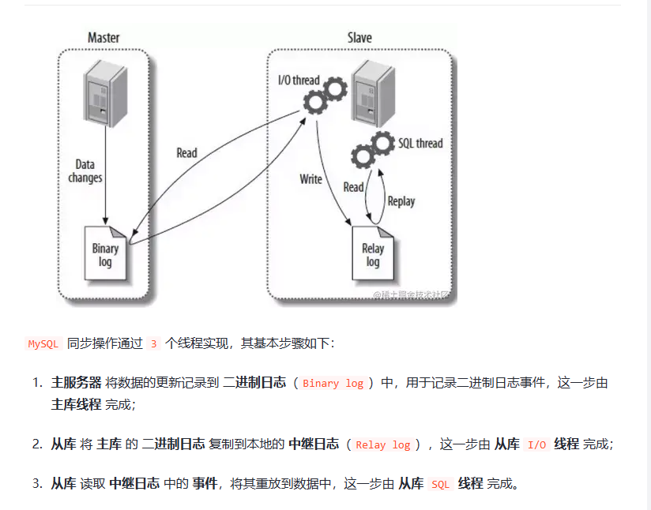
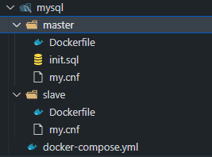

mysql 主从搭建
目录
简介
在当前查多读少的业务下， 我们迫切的需要读写分离， 并且需要数据库支持伸缩。这样我们可以多台数据库分摊请求， 减少单库的访问压力。
优点：
- 负载均衡
- 异地容灾备份
- 高可用
- 高扩展性
缺点：
- 写入变慢， 因为只有主库可以写入，并且主库同时也要写入日志。
- 从库有数据延迟
- 成本增加，性能消耗。
主从复制的方式
- binlog（基于日志）
- gtid （全局事务标识符）
主从复制流程
- 主库写入日志到binlog
- 从库到主库复制日志到中继日志，这一步由io线程完成
- 从库从中继日志读取日志， 并放到sql中， 这一步有sql线程完成

docker 搭建
文件结构

主master
# docker file
FROM mysql:latest
LABEL author="yyt-2860889218@qq.com"
ADD ./master/my.cnf /etc/mysql/my.cnf
[mysqld]
## 设置server_id，一般设置为IP，注意要唯一
server_id=100
## 复制过滤：也就是指定哪个数据库不用同步（mysql库一般不同步）
binlog-ignore-db=mysql
## 开启二进制日志功能，可以随便取，最好有含义（关键就是这里了）
log-bin=mysql-bin
## 为每个session分配的内存，在事务过程中用来存储二进制日志的缓存
binlog_cache_size=1M
## 主从复制的格式（mixed,statement,row，默认格式是statement）
binlog_format=mixed
## 二进制日志自动删除/过期的天数。默认值为0，表示不自动删除。
expire_logs_days=7
## 跳过主从复制中遇到的所有错误或指定类型的错误，避免slave端复制中断。
## 如：1062错误是指一些主键重复，1032错误是因为主从数据库数据不一致
slave_skip_errors=1062
从
#docker file
FROM mysql:latest
LABEL author="yyt-2860889218@qq.com"
ADD ./slave/my.cnf /etc/mysql/my.cnf
[mysqld]
## 设置server_id，一般设置为IP，注意要唯一
server_id=101
## 复制过滤：也就是指定哪个数据库不用同步（mysql库一般不同步）
binlog-ignore-db=mysql
## 开启二进制日志功能，以备Slave作为其它Slave的Master时使用
log-bin=mysql-slave1-bin
## 为每个session 分配的内存，在事务过程中用来存储二进制日志的缓存
binlog_cache_size=1M
## 主从复制的格式（mixed,statement,row，默认格式是statement）
binlog_format=mixed
## 二进制日志自动删除/过期的天数。默认值为0，表示不自动删除。
expire_logs_days=7
## 跳过主从复制中遇到的所有错误或指定类型的错误，避免slave端复制中断。
## 如：1062错误是指一些主键重复，1032错误是因为主从数据库数据不一致
slave_skip_errors=1062
## relay_log配置中继日志
relay_log=mysql-relay-bin
## log_slave_updates表示slave将复制事件写进自己的二进制日志
log_slave_updates=1
## 防止改变数据(除了特殊的线程)，只读模式， root用户不限制
read_only=1
docker compose
version: '3'
services:
mysql-master:
container_name: mysql_master
build:
context: ./
dockerfile: master/Dockerfile
restart: always
hostname: mysql-master
volumes:
- ./data/master:/var/lib/mysql
environment:
- "MYSQL_ROOT_PASSWORD=123456"
- "MYSQL_DATABASE=test"
networks:
- mysql_master_slave
ports:
- "33065:3306"
mysql-slave:
container_name: mysql_slave
build:
context: ./
dockerfile: slave/Dockerfile
restart: always
hostname: mysql-slave
volumes:
- ./data/slave:/var/lib/mysql
environment:
- "MYSQL_ROOT_PASSWORD=123456"
- "MYSQL_DATABASE=test"
ports:
- "33066:3306"
networks:
- mysql_master_slave
networks:
mysql_master_slave:
sql
# 主库
-- 创建用户
CREATE USER 'slave'@'%' IDENTIFIED BY '123456';
GRANT REPLICATION SLAVE ON *.* TO 'slave'@'%';
-- 刷新权限
FLUSH PRIVILEGES;
-- 获取相关信息
show master status;
## 从库
-- 在从上设置主库配置信息
CHANGE MASTER TO
master_host='mysql-master',
master_port=3306,
MASTER_USER='slave',
MASTER_PASSWORD='123456',
MASTER_LOG_FILE='mysql-bin.000003',
MASTER_LOG_POS=1150;
-- 启动从服务器
start slave;
-- 查看配置状态slave_IO_runring,slave_slq_runring
show slave status\G
异常解决
- 从数据库异常
- 确认是io线程问题
- sql线程问题： 根据日志来恢复数据
- 主数据库异常
- 查看相关从数据库日志时间， 谁近就把谁升级为主库
-- 查看配置状态
show slave status\G
# 查看 Last_SQL_Errno，Last_SQL_Error。
# 查看日志文件
show binlog events;
show binlog events in 'mysql-bin.000003' ;
恢复同步
#从库执行
stop slave;
SET GLOBAL SQL_SLAVE_SKIP_COUNTER = 1; -- 跳过一个事务，可选
start slave;